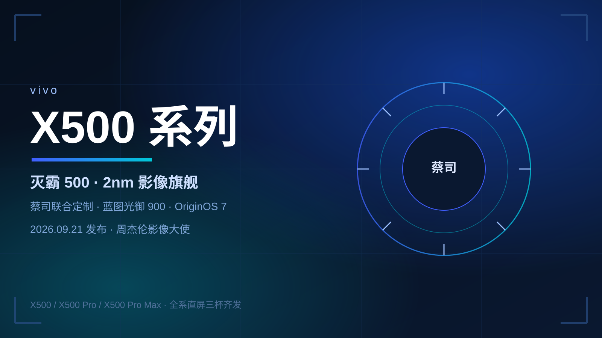
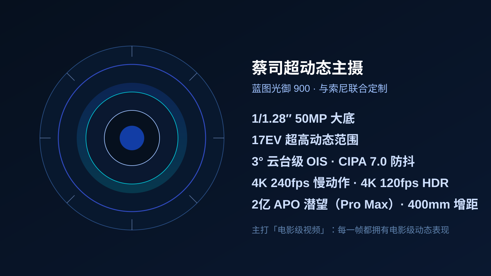
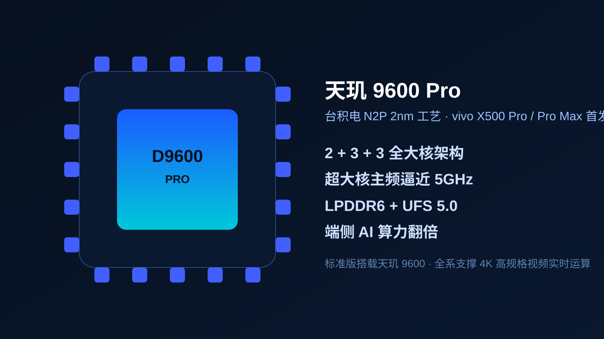
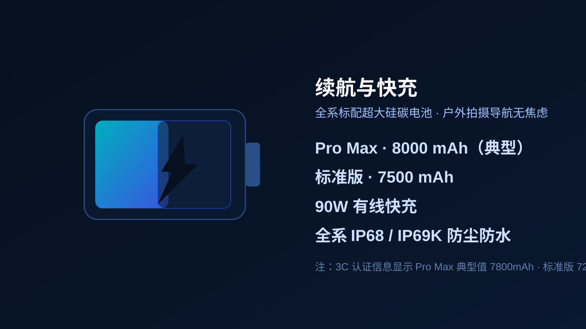
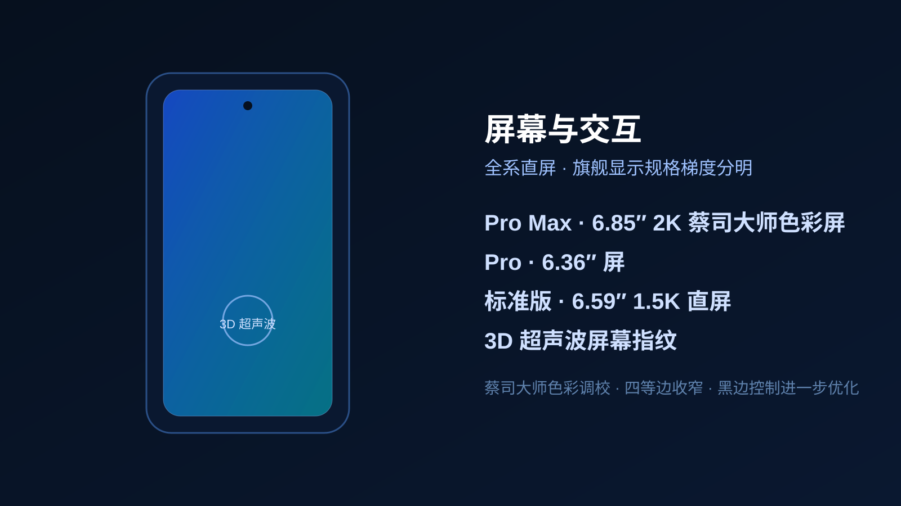
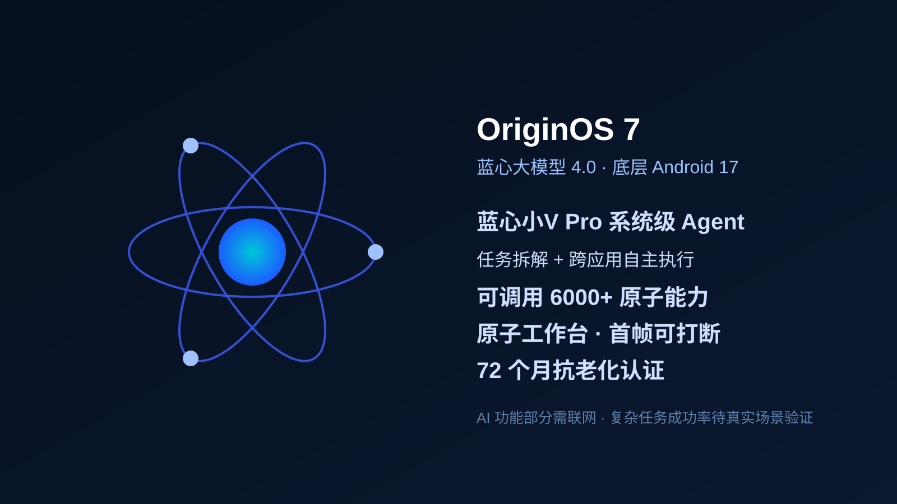

蔡司超动态主摄：把电影机装进口袋

蓝图光御 900：17EV 动态 + 3° 云台级防抖
这颗 5000 万像素、1/1.28″ 大底主摄实现行业最高的 17EV 动态范围，并支持 3° 云台级 OIS 防抖与 CIPA 7.0 专业防抖。它的直接价值是解决逆光拍摄高光过曝、暗部丢细节的痛点，并且把高动态范围下放到视频录制——每一帧都拥有电影级动态表现，而不只是照片。
2 亿像素 APO 超级潜望（Pro Max 独享）
顶配 Pro Max 搭载 2 亿像素定制 APO 潜望长焦，支持 CIPA 7.0 级防抖，可外接 400mm 增距镜，最高 30 倍抓拍。配合蔡司光学调校，远摄与人像色彩更自然通透。标准版与 Pro 则通过双 Pro 蔡司影像 + 8K 原生实况补齐中长焦体验。
4K 240fps 慢动作 + 4K 120fps HDR 直出
蓝图光御 900 首发支持 4K 240fps 慢动作与 4K 120fps HDR 直出。用产品经理韩伯啸的话说：「云台相机有的、没有的，X500 Pro 系列统统都有。」对 vlog、运动、宠物等高频拍摄场景，这是实打实的规格领先。
天玑 9600 Pro：台积电 2nm 全大核

全大核架构 + 端侧 AI 算力翻倍
2+3+3 全大核设计意味着没有小核拖累， sustained performance（持续性能）更稳，这对长时间 4K 高规格视频运算与本地 AI 大模型运行至关重要。天玑 9600 系列的 AI 神经算力增强，可支撑大型手游高帧率运行下的发热控制。
续航与屏幕：梯度分明不将就

8000mAh + 90W，户外拍摄无焦虑
Pro Max 典型值 7800mAh（标称 8000mAh），标准版 7270mAh（标称 7500mAh），全系 90W 有线快充。对重度影像用户而言，长续航是「能拍完一整天」的硬指标，比充电速度更刚需。

2K 蔡司大师色彩屏 + 3D 超声波指纹
Pro Max 配备 6.85″ 2K 蔡司大师色彩屏（京东方 Q11），Pro 为 6.36″，标准版 6.59″ 1.5K 直屏。全系采用 3D 超声波屏幕指纹，湿手解锁更可靠；四等边收窄、黑边控制进一步优化，纳米磨砂后盖不易沾指纹。
OriginOS 7 + 蓝心小V Pro：Agent 化系统

蓝心小V Pro：从问答到执行
蓝心小V Pro 基于蓝心 Harness 底座 + 四款分工大模型，可调用 6000+ 原子能力，把「旅行攻略」或「会议材料整理」这类复杂任务自动拆解、跨应用执行，并支持离线跨应用操作。原子工作台行业首发首帧交互可打断 + 五应用任务组打包流转。
价格与选购建议
| 机型 | 屏幕 | 电池 | 长焦 | 起售价（预计） |
|---|---|---|---|---|
| X500 标准版 | 6.59″ 1.5K 直屏 | 7500mAh | 双 Pro 蔡司 | ¥3999 |
| X500 Pro | 6.36″ | 约 6500mAh | 蔡司潜望 | 高于标准版 |
| X500 Pro Max | 6.85″ 2K | 8000mAh | 2亿 APO 潜望 | 高于 ¥7499 |
核心结论
影像差异化最稳
17EV 动态 + CIPA 7.0 防抖 + 4K240 慢动作，是 X500 最肉眼可感知、也最难被参数党反驳的升级。
2nm 全大核是双刃剑
天玑 9600 Pro 性能与端侧 AI 领先，但仅 Pro/Pro Max 独占；标准版 9600 已够用，购机前先想清是否真需要 2nm。
续航是真刚需
全系 7000mAh+ 解决了影像旗舰最大的「拍一半没电」痛点，比快充速度更值得夸。
Agent 化看落地
蓝心小V Pro 叙事漂亮，但复杂任务成功率与联网依赖是未知数，别为演示视频买单。